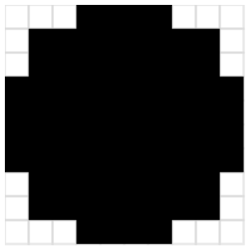

41323104 - cp2024 作業網站
Home
SMap
reveal
blog
About
Attendance
HW 1
HW 1 Exam
w7
w10
w11_hw
w12_hw
w13
w13_hw
w14_hw
w15
HW 2
HW 2 Exam
w16_exam1
HW 3
HW 3 Exam
w16_exam2
HW 4
HW 4 Exam
w16_exam3
Final Report
Brython
w10 <<
Previous
Next
>> w12_hw
w11_hw
第一題和第二題:
程式碼一
程式碼二

心得:
我覺得最難的是如何跟gpt 溝通得到我想要的程式，
在課堂上的時候一直沒有得到我想要的程式，後來才從gpt 獲得我想要的程式，我先把它傳在email，
然後在複製到個人網站的python ，確定是我希望的圖案和形狀之後，在把程式存在gist（
記得要把檔案名加上.py），然後儲存好了之後點raw，
會跑出一個網頁，把網頁網址複製，
然後點到自己的個人網站的python ，在網址上加？src=以及剛剛複製的網址，
能成功跑出程式和網址表示成功了！
w10 <<
Previous
Next
>> w12_hw
Copyright © All rights reserved | This template is made with
by
Colorlib